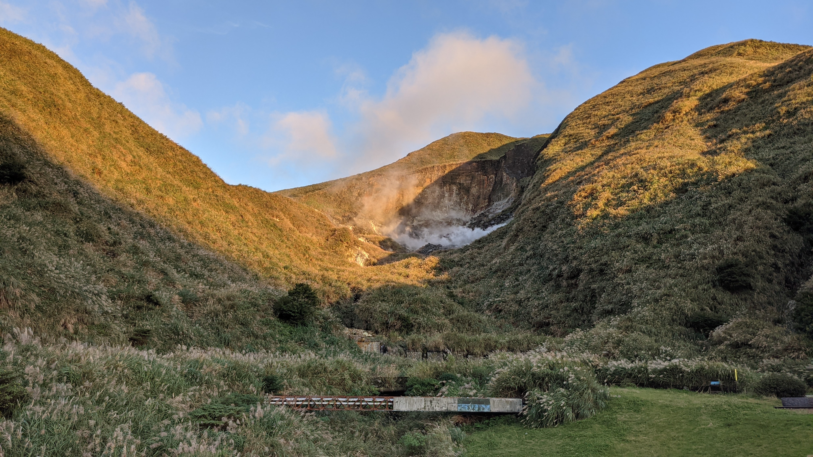
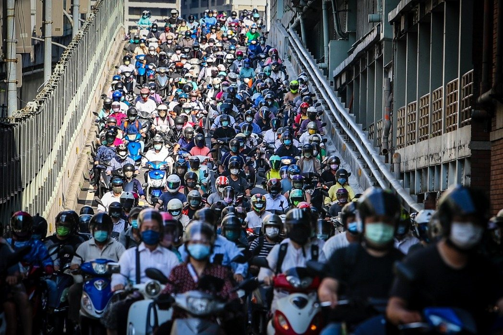

在地視角 ‧ 深度探索 ‧ 城市漫遊
台北，一座融合了傳統歷史與現代創意的城市。除了知名的 101 大樓，這裡還有百年的龍山寺、充滿活力的文創園區、以及令人垂涎的夜市美食。本網站旨在為交換生與外地朋友，提供一份最在地的旅遊指南。

陽明山花季、象山夜景，只需搭乘捷運，就能輕鬆擁抱大自然。
從士林的大雞排到饒河街的胡椒餅，帶你吃遍台北銅板美食。

台北捷運與 YouBike 轉乘教學，讓你像在地人一樣穿梭自如。